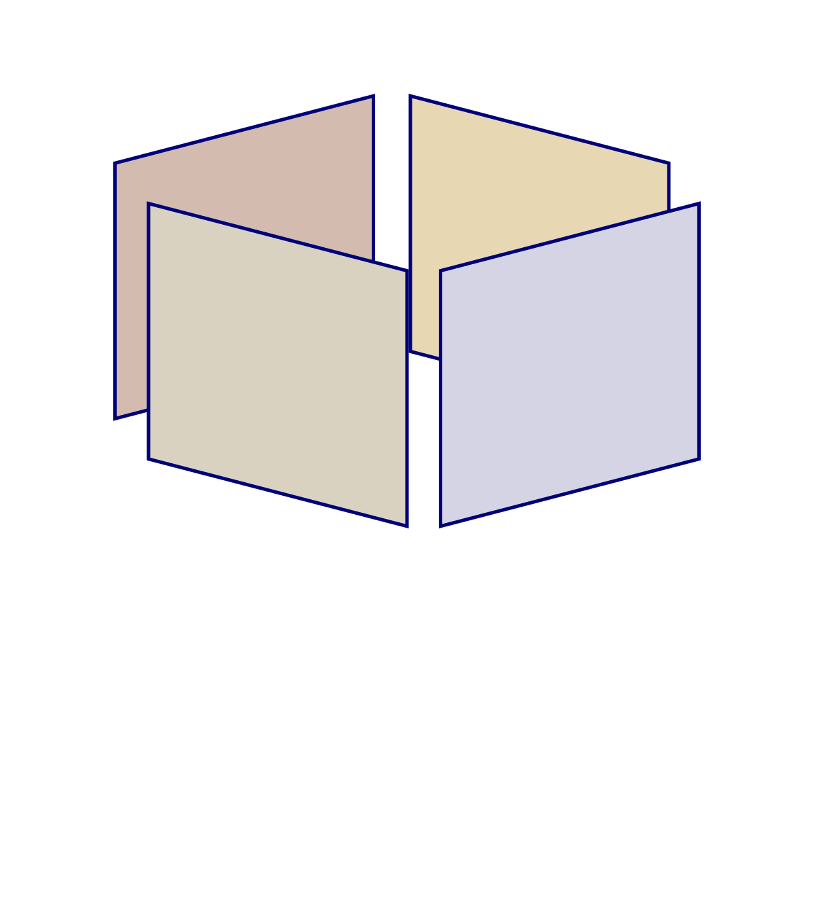
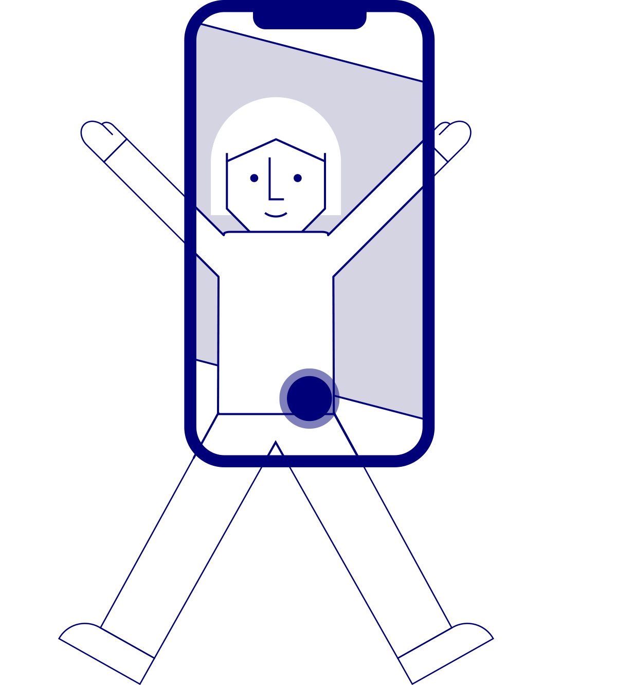

Tria el grup de fotos que vols fer servir i prem “Entrar”
Mou, gira, amplia, redueix, juga...

Enfoca el mòbil a terra per col·locar l'experiència
Si vols sortir a la foto demana a algú que te la faci

Omet